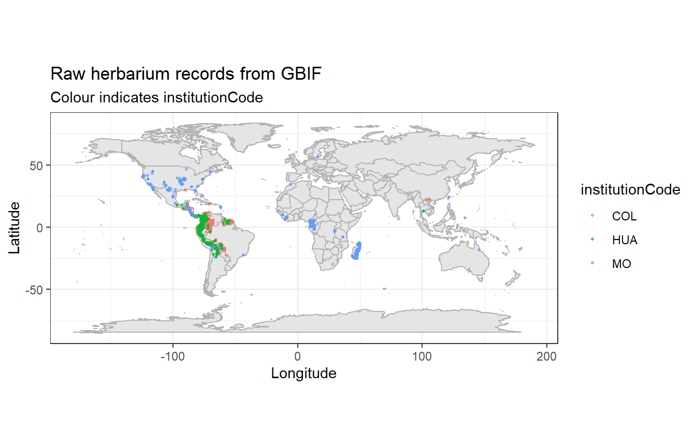
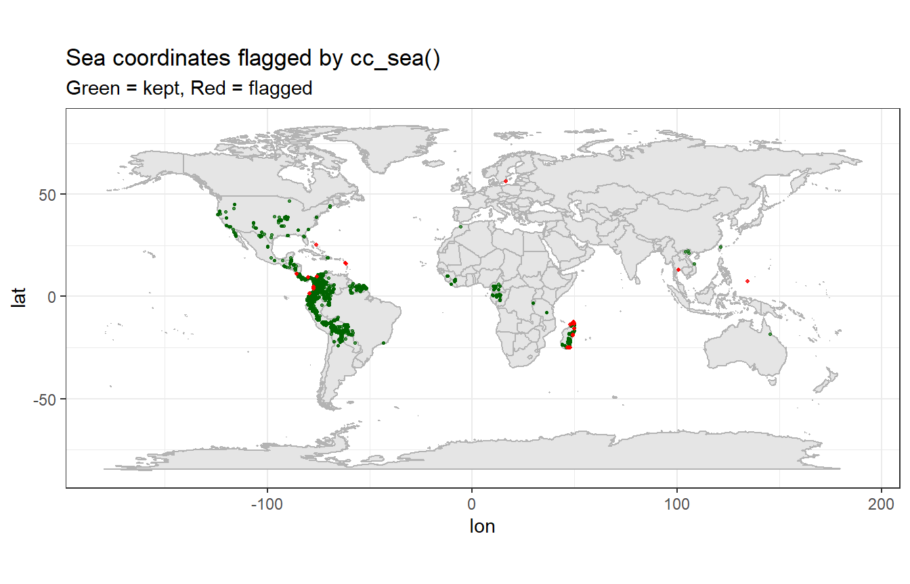
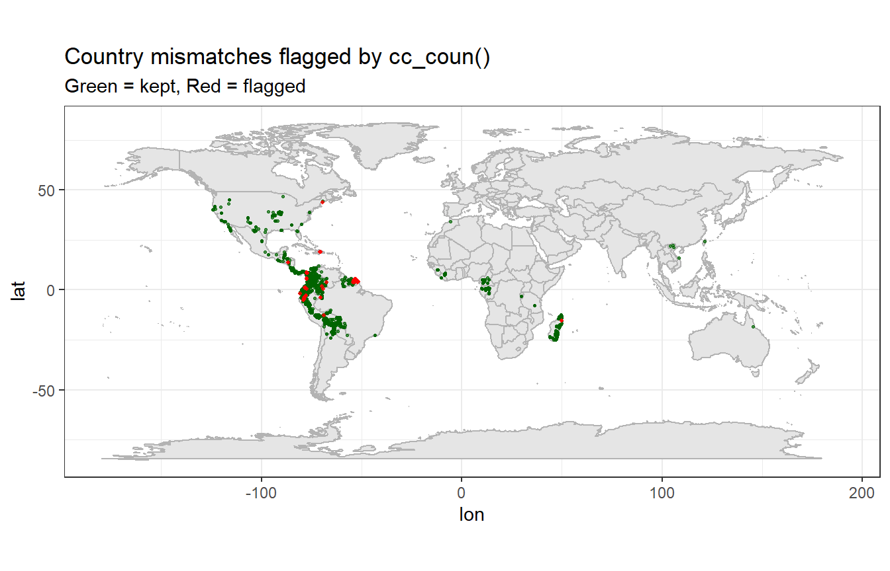
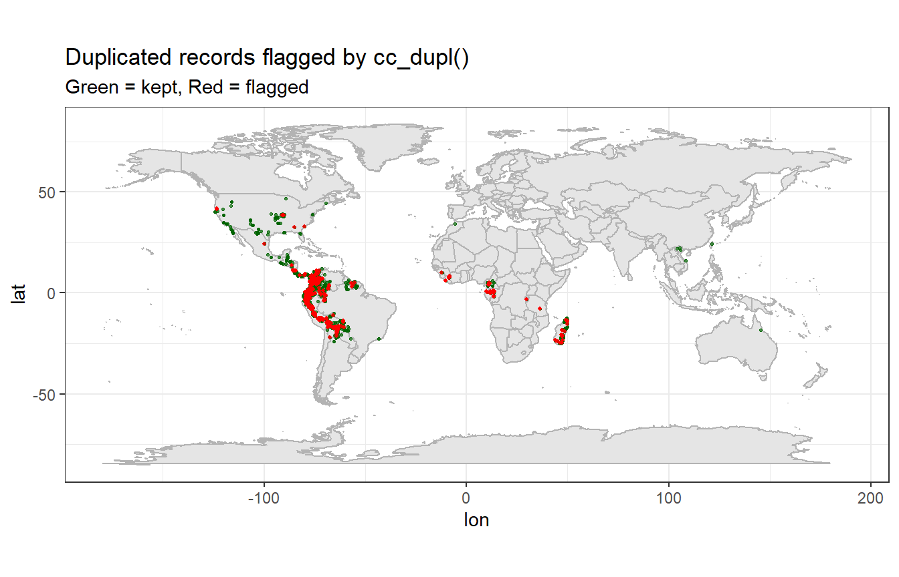
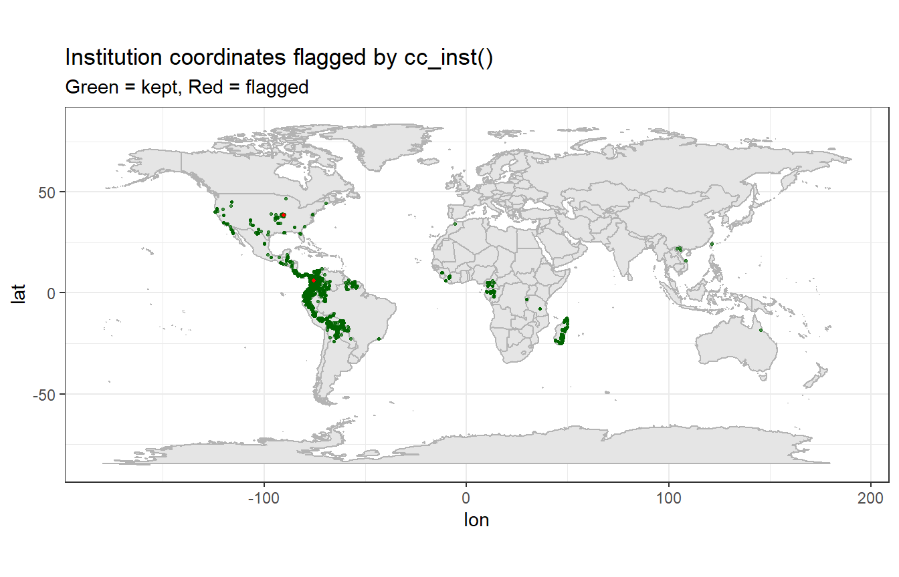
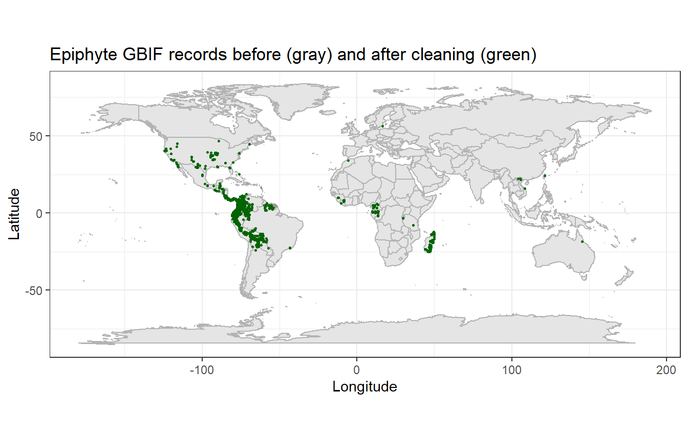

Code
install.packages(c(
"CoordinateCleaner",
"countrycode",
"dplyr",
"ggplot2",
"rgbif",
"sf",
"tibble",
"readr"
))WiNoDa School 2025 – Herbaria Case Study
*Workshop by Maria Judith Carmona Higuita and Prof. Dr. Alexander Zizka (University of Marburg), as part of the WiNoDa School 2025.
This tutorial is based on and enriched from the CoordinateCleaner vignette
“Cleaning GBIF data for the use in biogeography”
(Source: vignettes/Cleaning_GBIF_data_with_CoordinateCleaner.Rmd, available at
https://ropensci.github.io/CoordinateCleaner/articles/Cleaning_GBIF_data_with_CoordinateCleaner.html)and on the article:
Zizka, A., Silvestro, D., Andermann, T., et al. (2019).
CoordinateCleaner: Standardized cleaning of occurrence records from biological collection databases.
Methods in Ecology and Evolution, 10, 744–751.
https://doi.org/10.1111/2041-210X.13152
Herbarium collections are one of the most important sources of biodiversity information in the world.
They document more than two centuries of botanical exploration, often including unique historical specimens, type material, and extensive records from remote regions. Many of these data are now shared through GBIF, making herbarium collections a cornerstone for biogeography, conservation, and ecological research.
However, herbarium data come with a characteristic set of challenges. Specimens are often collected in the field and later distributed as duplicates to several institutions. Each institution may georeference, digitize, or update metadata independently, creating inconsistencies across datasets. Common problems in herbarium-based GBIF records include:
In this tutorial, we focus on epiphytic plants and work with data from several herbaria in the northern Andes (e.g., COL, HUA, and MO) to demonstrate how to:
This tutorial is based on, and enriches, the vignette “Cleaning GBIF data for the use in biogeography” from the CoordinateCleaner package and the article by Zizka et al. (2019).
install.packages(c(
"CoordinateCleaner",
"countrycode",
"dplyr",
"ggplot2",
"rgbif",
"sf",
"tibble",
"readr"
))library(CoordinateCleaner)
library(countrycode)
library(dplyr)
library(ggplot2)
library(rgbif)
library(sf)
library(tibble)
library(readr)GBIF stands for Global Biodiversity Information Facility.
It is an international open-data platform that aggregates biodiversity records from thousands of sources, including:
GBIF does not collect specimens itself.
Instead, it provides a single global portal where data providers can share information about:
Before working with GBIF data, it is important to understand how biodiversity records are described.
GBIF uses an international standard called Darwin Core, which acts as a shared vocabulary used by museums, herbaria, researchers, and citizen‑science platforms.
Darwin Core ensures that information coming from many different sources can be combined and interpreted in a consistent way.
One key Darwin Core field is basisOfRecord.
This field describes what type of record we are looking at and how the observation or specimen was obtained.
Some common basisOfRecord values you will encounter are:
For this workshop, we focus on herbarium data, so we keep only
basisOfRecord == "PRESERVED_SPECIMEN".
These records correspond to real, physical vouchers collected by botanists and curated in an institution.
They are the most reliable type of record for understanding species distributions and for identifying coordinate errors, because:
Other record types, such as HUMAN_OBSERVATION, can be useful in modern biodiversity research, especially high‑quality iNaturalist observations.
However, they follow different sampling patterns, cannot be re‑examined, and are better handled in workflows dedicated to observational data.
# Download herbarium records from GBIF using 'rgbif'
# We use three institutions as an example: COL, HUA, MO
herbaria <- c("COL", "HUA", "MO")
gbif_list <- lapply(herbaria, function(inst) {
message("Downloading records for institutionCode = ", inst)
res <- occ_search(
institutionCode = inst,
hasCoordinate = TRUE,
limit = 5000
)
res$data
})
# Combine all downloaded records into one table
dat_raw <- dplyr::bind_rows(gbif_list)
# Inspect structure
str(dat_raw)tibble [15,000 × 114] (S3: tbl_df/tbl/data.frame)
$ key : chr [1:15000] "5054558306" "5868815018" "5868814678" "5831595616" ...
$ scientificName : chr [1:15000] "Anthurium Schott" "Greigia Regel" "Greigia Regel" "Marcgraviaceae" ...
$ decimalLatitude : num [1:15000] -9.22 3.89 5.81 -8.49 -8.49 ...
$ decimalLongitude : num [1:15000] -75.8 -74.5 -75.3 -76.1 -76.1 ...
$ issues : chr [1:15000] "cdround,gass84,txmathi,osiic,inmano" "cdround,gass84,txmathi,osiic,inmano" "cdround,gass84,txmathi,osiic,inmano" "cdround,gass84,osiic,inmano" ...
$ datasetKey : chr [1:15000] "e053ff53-c156-4e2e-b9b5-4462e9625424" "e053ff53-c156-4e2e-b9b5-4462e9625424" "e053ff53-c156-4e2e-b9b5-4462e9625424" "e053ff53-c156-4e2e-b9b5-4462e9625424" ...
$ publishingOrgKey : chr [1:15000] "90fd6680-349f-11d8-aa2d-b8a03c50a862" "90fd6680-349f-11d8-aa2d-b8a03c50a862" "90fd6680-349f-11d8-aa2d-b8a03c50a862" "90fd6680-349f-11d8-aa2d-b8a03c50a862" ...
$ installationKey : chr [1:15000] "c4e134d3-c68f-406d-a116-6a37895602e0" "c4e134d3-c68f-406d-a116-6a37895602e0" "c4e134d3-c68f-406d-a116-6a37895602e0" "c4e134d3-c68f-406d-a116-6a37895602e0" ...
$ hostingOrganizationKey : chr [1:15000] "90fd6680-349f-11d8-aa2d-b8a03c50a862" "90fd6680-349f-11d8-aa2d-b8a03c50a862" "90fd6680-349f-11d8-aa2d-b8a03c50a862" "90fd6680-349f-11d8-aa2d-b8a03c50a862" ...
$ publishingCountry : chr [1:15000] "US" "US" "US" "US" ...
$ protocol : chr [1:15000] "EML" "EML" "EML" "EML" ...
$ lastCrawled : chr [1:15000] "2025-11-19T04:07:10.017+00:00" "2025-11-19T04:07:10.017+00:00" "2025-11-19T04:07:10.017+00:00" "2025-11-19T04:07:10.017+00:00" ...
$ lastParsed : chr [1:15000] "2025-11-19T04:34:50.914+00:00" "2025-11-19T04:36:05.589+00:00" "2025-11-19T04:35:11.024+00:00" "2025-11-19T04:36:09.390+00:00" ...
$ crawlId : int [1:15000] 170 170 170 170 170 170 170 170 170 170 ...
$ basisOfRecord : chr [1:15000] "PRESERVED_SPECIMEN" "PRESERVED_SPECIMEN" "PRESERVED_SPECIMEN" "PRESERVED_SPECIMEN" ...
$ individualCount : int [1:15000] 1 3 3 4 4 4 4 4 4 4 ...
$ occurrenceStatus : chr [1:15000] "PRESENT" "PRESENT" "PRESENT" "PRESENT" ...
$ taxonKey : int [1:15000] 2872218 2693919 2693919 6643 7275870 6643 2754367 3189414 3189414 3189414 ...
$ kingdomKey : int [1:15000] 6 6 6 6 6 6 6 6 6 6 ...
$ phylumKey : int [1:15000] 7707728 7707728 7707728 7707728 7707728 7707728 7707728 7707728 7707728 7707728 ...
$ classKey : int [1:15000] 196 196 196 220 220 220 196 220 220 220 ...
$ orderKey : int [1:15000] 551 1369 1369 1353 1353 1353 1171 1353 1353 1353 ...
$ familyKey : int [1:15000] 6979 3740 3740 6643 6643 6643 7694 6643 6643 6643 ...
$ genusKey : int [1:15000] 2872218 2693919 2693919 NA 7275870 NA 2754367 3189414 3189414 3189414 ...
$ acceptedTaxonKey : int [1:15000] 2872218 2693919 2693919 6643 7275870 6643 2754367 3189414 3189414 3189414 ...
$ acceptedScientificName : chr [1:15000] "Anthurium Schott" "Greigia Regel" "Greigia Regel" "Marcgraviaceae" ...
$ kingdom : chr [1:15000] "Plantae" "Plantae" "Plantae" "Plantae" ...
$ phylum : chr [1:15000] "Tracheophyta" "Tracheophyta" "Tracheophyta" "Tracheophyta" ...
$ order : chr [1:15000] "Alismatales" "Poales" "Poales" "Ericales" ...
$ family : chr [1:15000] "Araceae" "Bromeliaceae" "Bromeliaceae" "Marcgraviaceae" ...
$ genus : chr [1:15000] "Anthurium" "Greigia" "Greigia" NA ...
$ taxonRank : chr [1:15000] "GENUS" "GENUS" "GENUS" "FAMILY" ...
$ taxonomicStatus : chr [1:15000] "ACCEPTED" "ACCEPTED" "ACCEPTED" "ACCEPTED" ...
$ dateIdentified : chr [1:15000] "2025-01-01T00:00:00" "2025-01-01T00:00:00" "2025-01-01T00:00:00" NA ...
$ elevation : num [1:15000] 1500 2647 2900 1550 1178 ...
$ continent : chr [1:15000] "SOUTH_AMERICA" "SOUTH_AMERICA" "SOUTH_AMERICA" "SOUTH_AMERICA" ...
$ stateProvince : chr [1:15000] "Huánuco" "Cundinamarca" "Antioquia" "Huánuco" ...
$ year : int [1:15000] 2024 2023 2023 2022 2022 2022 2022 2022 2022 2022 ...
$ month : int [1:15000] 7 2 12 2 2 2 2 2 2 2 ...
$ day : int [1:15000] 24 26 8 21 17 19 23 28 20 24 ...
$ eventDate : chr [1:15000] "2024-07-24" "2023-02-26" "2023-12-08" "2022-02-21" ...
$ startDayOfYear : int [1:15000] 206 57 342 52 48 50 54 59 51 55 ...
$ endDayOfYear : int [1:15000] 206 57 342 52 48 50 54 59 51 55 ...
$ modified : chr [1:15000] "2025-01-27T10:44:00.000+00:00" "2025-10-24T12:59:00.000+00:00" "2025-10-28T11:15:00.000+00:00" "2025-07-18T15:21:00.000+00:00" ...
$ lastInterpreted : chr [1:15000] "2025-11-19T04:34:50.914+00:00" "2025-11-19T04:36:05.589+00:00" "2025-11-19T04:35:11.024+00:00" "2025-11-19T04:36:09.390+00:00" ...
$ license : chr [1:15000] "http://creativecommons.org/licenses/by/4.0/legalcode" "http://creativecommons.org/licenses/by/4.0/legalcode" "http://creativecommons.org/licenses/by/4.0/legalcode" "http://creativecommons.org/licenses/by/4.0/legalcode" ...
$ isSequenced : logi [1:15000] FALSE FALSE FALSE FALSE FALSE FALSE ...
$ identifier : chr [1:15000] "urn:catalog:MO:Tropicos:104163459" "urn:catalog:MO:Tropicos:104850887" "urn:catalog:MO:Tropicos:104850967" "urn:catalog:MO:Tropicos:104563034" ...
$ facts : chr [1:15000] "none" "none" "none" "none" ...
$ relations : chr [1:15000] "none" "none" "none" "none" ...
$ isInCluster : logi [1:15000] FALSE TRUE TRUE FALSE FALSE FALSE ...
$ datasetName : chr [1:15000] "Tropicos" "Tropicos" "Tropicos" "Tropicos" ...
$ recordedBy : chr [1:15000] "Armen Enikolopov|Loayza Alva, Albert Alfredo|Kamimila Bettelyoun" "Llanos-Prieto, Alejandro" "Llanos-Prieto, Alejandro" "Rocío Rojas|Rodolfo Vásquez|J.Flores|J. Gomez" ...
$ geodeticDatum : chr [1:15000] "WGS84" "WGS84" "WGS84" "WGS84" ...
$ class : chr [1:15000] "Liliopsida" "Liliopsida" "Liliopsida" "Magnoliopsida" ...
$ countryCode : chr [1:15000] "PE" "CO" "CO" "PE" ...
$ recordedByIDs : chr [1:15000] "none" "none" "none" "none" ...
$ identifiedByIDs : chr [1:15000] "none" "none" "none" "none" ...
$ gbifRegion : chr [1:15000] "LATIN_AMERICA" "LATIN_AMERICA" "LATIN_AMERICA" "LATIN_AMERICA" ...
$ country : chr [1:15000] "Peru" "Colombia" "Colombia" "Peru" ...
$ publishedByGbifRegion : chr [1:15000] "NORTH_AMERICA" "NORTH_AMERICA" "NORTH_AMERICA" "NORTH_AMERICA" ...
$ nomenclaturalStatus : chr [1:15000] "No opinion" "Legitimate" "Legitimate" "nom. cons." ...
$ rightsHolder : chr [1:15000] "Missouri Botanical Garden" "Missouri Botanical Garden" "Missouri Botanical Garden" "Missouri Botanical Garden" ...
$ identifier.1 : chr [1:15000] "urn:catalog:MO:Tropicos:104163459" "urn:catalog:MO:Tropicos:104850887" "urn:catalog:MO:Tropicos:104850967" "urn:catalog:MO:Tropicos:104563034" ...
$ recordNumber : chr [1:15000] "340" "107" "218" "11025" ...
$ nomenclaturalCode : chr [1:15000] "ICNafp" "ICNafp" "ICNafp" "ICNafp" ...
$ county : chr [1:15000] "Leoncio Prado" "Cabrera" "Sonsón" "Leoncio Prado" ...
$ locality : chr [1:15000] "32km NE of Tingo Maria on Ruta 5N to Pucallpa (19km E of Puente Pumahuas), in vicinity of village of San Isidro"| __truncated__ "vereda Nuñez" "vereda Norí, ascenso al “Cerro de Las Papas” o “Los Parados”" "Distrito Pucayacu. Parque Nacional Cordillera Azul. Campamento \"Jergon\" hacia el campamento \"Volante\"." ...
$ fieldNumber : chr [1:15000] "83" "1" "2" "87" ...
$ collectionCode : chr [1:15000] "Tropicos" "Tropicos" "Tropicos" "Tropicos" ...
$ gbifID : chr [1:15000] "5054558306" "5868815018" "5868814678" "5831595616" ...
$ occurrenceID : chr [1:15000] "urn:catalog:MO:Tropicos:104163459" "urn:catalog:MO:Tropicos:104850887" "urn:catalog:MO:Tropicos:104850967" "urn:catalog:MO:Tropicos:104563034" ...
$ type : chr [1:15000] "PhysicalObject" "PhysicalObject" "PhysicalObject" "PhysicalObject" ...
$ taxonID : chr [1:15000] "100556477" "100567685" "100567739" "42000094" ...
$ catalogNumber : chr [1:15000] "104163459" "104850887" "104850967" "104563034" ...
$ institutionCode : chr [1:15000] "COL" "COL" "COL" "COL" ...
$ ownerInstitutionCode : chr [1:15000] "MOBOT" "MOBOT" "MOBOT" "MOBOT" ...
$ bibliographicCitation : chr [1:15000] "http://www.tropicos.org/Specimen/104163459" "http://www.tropicos.org/Specimen/104850887" "http://www.tropicos.org/Specimen/104850967" "http://www.tropicos.org/Specimen/104563034" ...
$ collectionID : chr [1:15000] "http://biocol.org/urn:lsid:biocol.org:col:15859" "http://biocol.org/urn:lsid:biocol.org:col:15859" "http://biocol.org/urn:lsid:biocol.org:col:15859" "http://biocol.org/urn:lsid:biocol.org:col:15859" ...
$ name : chr [1:15000] "Anthurium Schott" "Greigia Regel" "Greigia Regel" "Marcgraviaceae" ...
$ typeStatus : chr [1:15000] NA "Holotype" "Holotype" NA ...
$ elevationAccuracy : num [1:15000] NA NA NA 50 NA NA NA NA NA NA ...
$ identifiedBy : chr [1:15000] NA NA NA NA ...
$ speciesKey : int [1:15000] NA NA NA NA NA NA NA NA NA NA ...
$ species : chr [1:15000] NA NA NA NA ...
$ genericName : chr [1:15000] NA NA NA NA ...
$ specificEpithet : chr [1:15000] NA NA NA NA ...
$ references : chr [1:15000] NA NA NA NA ...
$ combinationAuthors : chr [1:15000] NA NA NA NA ...
$ municipality : chr [1:15000] NA NA NA NA ...
$ verbatimScientificName : chr [1:15000] NA NA NA NA ...
$ namePublishedIn : chr [1:15000] NA NA NA NA ...
$ http...unknown.org.verbatimLabel: chr [1:15000] NA NA NA NA ...
$ combinationYear : chr [1:15000] NA NA NA NA ...
$ canonicalName : chr [1:15000] NA NA NA NA ...
$ iucnRedListCategory : chr [1:15000] NA NA NA NA ...
$ basionymAuthors : chr [1:15000] NA NA NA NA ...
$ identificationQualifier : chr [1:15000] NA NA NA NA ...
$ infraspecificEpithet : chr [1:15000] NA NA NA NA ...
[list output truncated]# Save a local copy so participants can load it without downloading
if (!dir.exists("data")) dir.create("data")
readr::write_csv(dat_raw, "data/herbaria_raw_epiphytes.csv")For participants who cannot retrieve data directly from GBIF during the session,
the same dataset is stored in the data/ folder.
# Load the previously saved GBIF dataset
dat_raw <- readr::read_csv("data/herbaria_raw_epiphytes.csv")
# Check dimensions
dim(dat_raw)[1] 15000 114dat <- dat_raw %>%
dplyr::select(
species,
decimalLongitude,
decimalLatitude,
countryCode,
year,
basisOfRecord,
individualCount,
institutionCode,
datasetName,
gbifID
) %>%
dplyr::filter(!is.na(decimalLongitude),
!is.na(decimalLatitude)) %>%
dplyr::filter(basisOfRecord == "PRESERVED_SPECIMEN") %>%
dplyr::rename(lon = decimalLongitude,
lat = decimalLatitude)
dat <- dat %>%
mutate(
lon = as.numeric(lon),
lat = as.numeric(lat)
)
glimpse(dat)Rows: 14,890
Columns: 10
$ species <chr> NA, NA, NA, NA, NA, NA, NA, NA, NA, NA, NA, NA, NA, NA…
$ lon <dbl> -75.82953, -74.48056, -75.26861, -76.10306, -76.10167,…
$ lat <dbl> -9.221861, 3.893611, 5.810000, -8.490833, -8.490278, -…
$ countryCode <chr> "PE", "CO", "CO", "PE", "PE", "PE", "PE", "PE", "PE", …
$ year <dbl> 2024, 2023, 2023, 2022, 2022, 2022, 2022, 2022, 2022, …
$ basisOfRecord <chr> "PRESERVED_SPECIMEN", "PRESERVED_SPECIMEN", "PRESERVED…
$ individualCount <dbl> 1, 3, 3, 4, 4, 4, 4, 4, 4, 4, 8, 1, 4, 4, 4, 4, 4, 3, …
$ institutionCode <chr> "COL", "COL", "COL", "COL", "COL", "COL", "COL", "COL"…
$ datasetName <chr> "Tropicos", "Tropicos", "Tropicos", "Tropicos", "Tropi…
$ gbifID <dbl> 5054558306, 5868815018, 5868814678, 5831595616, 583160…After loading the data, it is useful to explore the dataset to understand its structure and identify any obvious problems.
# number of records
nrow(dat_raw)[1] 15000# names of all columns
names(dat_raw) [1] "key" "scientificName"
[3] "decimalLatitude" "decimalLongitude"
[5] "issues" "datasetKey"
[7] "publishingOrgKey" "installationKey"
[9] "hostingOrganizationKey" "publishingCountry"
[11] "protocol" "lastCrawled"
[13] "lastParsed" "crawlId"
[15] "basisOfRecord" "individualCount"
[17] "occurrenceStatus" "taxonKey"
[19] "kingdomKey" "phylumKey"
[21] "classKey" "orderKey"
[23] "familyKey" "genusKey"
[25] "acceptedTaxonKey" "acceptedScientificName"
[27] "kingdom" "phylum"
[29] "order" "family"
[31] "genus" "taxonRank"
[33] "taxonomicStatus" "dateIdentified"
[35] "elevation" "continent"
[37] "stateProvince" "year"
[39] "month" "day"
[41] "eventDate" "startDayOfYear"
[43] "endDayOfYear" "modified"
[45] "lastInterpreted" "license"
[47] "isSequenced" "identifier"
[49] "facts" "relations"
[51] "isInCluster" "datasetName"
[53] "recordedBy" "geodeticDatum"
[55] "class" "countryCode"
[57] "recordedByIDs" "identifiedByIDs"
[59] "gbifRegion" "country"
[61] "publishedByGbifRegion" "nomenclaturalStatus"
[63] "rightsHolder" "identifier.1"
[65] "recordNumber" "nomenclaturalCode"
[67] "county" "locality"
[69] "fieldNumber" "collectionCode"
[71] "gbifID" "occurrenceID"
[73] "type" "taxonID"
[75] "catalogNumber" "institutionCode"
[77] "ownerInstitutionCode" "bibliographicCitation"
[79] "collectionID" "name"
[81] "typeStatus" "elevationAccuracy"
[83] "identifiedBy" "speciesKey"
[85] "species" "genericName"
[87] "specificEpithet" "references"
[89] "combinationAuthors" "municipality"
[91] "verbatimScientificName" "namePublishedIn"
[93] "http...unknown.org.verbatimLabel" "combinationYear"
[95] "canonicalName" "iucnRedListCategory"
[97] "basionymAuthors" "identificationQualifier"
[99] "infraspecificEpithet" "basionymYear"
[101] "gadm" "organismRemarks"
[103] "georeferenceRemarks" "occurrenceRemarks"
[105] "sex" "habitat"
[107] "institutionKey" "associatedSequences"
[109] "collectionKey" "otherCatalogNumbers"
[111] "taxonConceptID" "associatedReferences"
[113] "higherClassification" "distanceFromCentroidInMeters" # quick preview
head(dat_raw)# A tibble: 6 × 114
key scientificName decimalLatitude decimalLongitude issues datasetKey
<dbl> <chr> <dbl> <dbl> <chr> <chr>
1 5054558306 Anthurium Schott -9.22 -75.8 cdrou… e053ff53-…
2 5868815018 Greigia Regel 3.89 -74.5 cdrou… e053ff53-…
3 5868814678 Greigia Regel 5.81 -75.3 cdrou… e053ff53-…
4 5831595616 Marcgraviaceae -8.49 -76.1 cdrou… e053ff53-…
5 5831605446 Norantea Aubl. -8.49 -76.1 cdrou… e053ff53-…
6 5831614206 Marcgraviaceae -8.49 -76.1 cdrou… e053ff53-…
# ℹ 108 more variables: publishingOrgKey <chr>, installationKey <chr>,
# hostingOrganizationKey <chr>, publishingCountry <chr>, protocol <chr>,
# lastCrawled <dttm>, lastParsed <dttm>, crawlId <dbl>, basisOfRecord <chr>,
# individualCount <dbl>, occurrenceStatus <chr>, taxonKey <dbl>,
# kingdomKey <dbl>, phylumKey <dbl>, classKey <dbl>, orderKey <dbl>,
# familyKey <dbl>, genusKey <dbl>, acceptedTaxonKey <dbl>,
# acceptedScientificName <chr>, kingdom <chr>, phylum <chr>, order <chr>, …We now work with the filtered dataset dat, which contains only PRESERVED_SPECIMEN records with valid coordinates.
# number of cleaned records
nrow(dat)[1] 14890# structure of the filtered data
str(dat)tibble [14,890 × 10] (S3: tbl_df/tbl/data.frame)
$ species : chr [1:14890] NA NA NA NA ...
$ lon : num [1:14890] -75.8 -74.5 -75.3 -76.1 -76.1 ...
$ lat : num [1:14890] -9.22 3.89 5.81 -8.49 -8.49 ...
$ countryCode : chr [1:14890] "PE" "CO" "CO" "PE" ...
$ year : num [1:14890] 2024 2023 2023 2022 2022 ...
$ basisOfRecord : chr [1:14890] "PRESERVED_SPECIMEN" "PRESERVED_SPECIMEN" "PRESERVED_SPECIMEN" "PRESERVED_SPECIMEN" ...
$ individualCount: num [1:14890] 1 3 3 4 4 4 4 4 4 4 ...
$ institutionCode: chr [1:14890] "COL" "COL" "COL" "COL" ...
$ datasetName : chr [1:14890] "Tropicos" "Tropicos" "Tropicos" "Tropicos" ...
$ gbifID : num [1:14890] 5.05e+09 5.87e+09 5.87e+09 5.83e+09 5.83e+09 ...# basic summary of coordinate ranges
summary(dat[, c("lon", "lat")]) lon lat
Min. :-124.23 Min. :-25.1181
1st Qu.: -76.13 1st Qu.: -3.1218
Median : -74.42 Median : 1.2119
Mean : -52.84 Mean : 0.5852
3rd Qu.: -56.89 3rd Qu.: 6.2642
Max. : 145.48 Max. : 56.3362 A simple map helps identify obvious issues such as points in the ocean, far outside the expected region, duplicated coordinates, or strong clustering around cities or institutions.
world_map <- borders("world", colour = "gray70", fill = "gray90")
ggplot() +
world_map +
coord_fixed() +
geom_point(
data = dat,
aes(x = lon, y = lat, colour = institutionCode),
size = 0.7,
alpha = 0.7
) +
labs(
title = "Raw herbarium records from GBIF",
subtitle = "Colour indicates institutionCode",
x = "Longitude",
y = "Latitude"
) +
theme_bw()
This first map usually reveals patterns such as: - duplicated specimens appearing at exactly the same coordinates, - historical specimens georeferenced to country centroids, - specimens assigned to a biodiversity institution instead of the true locality, - specimens plotted in the sea due to errors in decimal degrees or swapped coordinates.
We will address these issues using CoordinateCleaner in the next steps.
CoordinateCleaner provides a set of tests that identify typical errors found in herbarium data. These tests operate at the record level, flagging individual coordinates that are likely incorrect. Here we apply the most relevant tests for collection-based datasets.
Before running any test, we define a helper function that will help us visualise flagged and kept points.
plot_flags <- function(data, keep, title) {
# 'keep' is a logical vector: TRUE = kept, FALSE = problematic
data_kept <- data[keep, ]
data_flagged <- data[!keep, ]
world_map <- borders("world", colour = "gray70", fill = "gray90")
ggplot() +
world_map +
coord_fixed() +
geom_point(
data = data_kept,
aes(lon, lat),
color = "darkgreen",
size = 0.6,
alpha = 0.7
) +
geom_point(
data = data_flagged,
aes(lon, lat),
color = "red",
size = 0.8,
alpha = 0.8
) +
labs(
title = title,
subtitle = "Green = kept, Red = flagged"
) +
theme_bw()
}Coordinates outside the valid numeric range or containing impossible values.
flag_val <- cc_val(
x = dat,
lon = "lon",
lat = "lat",
value = "flagged" # TRUE = problematic, FALSE = kept
)All valid coordinates
A common placeholder when coordinates were not available or failed to geocode.
flag_zero <- cc_zero(
x = dat,
lon = "lon",
lat = "lat"
)we do not have coordinates in 0,0
Herbarium specimens should not be in the ocean, so this test removes incorrect decimal values or swapped coordinates.
flag_sea <- cc_sea(
x = dat,
lon = "lon",
lat = "lat",
value = "flagged" # TRUE = in the sea, FALSE = kept
)
flag_sea <- as.logical(flag_sea)
n_total <- length(flag_sea)
n_flagged <- sum(flag_sea, na.rm = TRUE)
n_kept <- n_total - n_flagged
cat("Sea coordinates test\n")Sea coordinates testcat(" Total records:", n_total, "\n") Total records: 14890 cat(" Kept (on land):", n_kept, "\n") Kept (on land): 139 cat(" Flagged (in sea):", n_flagged, "\n\n") Flagged (in sea): 14751 plot_flags(dat, flag_sea, "Sea coordinates flagged by cc_sea()")
dat <- dat[flag_sea, ] # here we remove the flagged records
nrow(dat)[1] 14751Here we check whether coordinates fall inside the country indicated in the record.
We first convert country codes to ISO3, as required by cc_coun().
dat <- dat %>%
dplyr::mutate(
countryCode = countrycode(
countryCode,
origin = "iso2c",
destination = "iso3c"
)
)flag_country <- cc_coun(
x = dat,
lon = "lon",
lat = "lat",
iso3 = "countryCode",
value = "flagged" # TRUE = mismatch, FALSE = kept
)
flag_country <- as.logical(flag_country)
n_total <- length(flag_country)
n_flagged <- sum(flag_country, na.rm = TRUE)
n_kept <- n_total - n_flagged
cat("Country mismatch test\n")Country mismatch testcat(" Total records:", n_total, "\n") Total records: 14751 cat(" Kept (matching country):", n_kept, "\n") Kept (matching country): 370 cat(" Flagged (country mismatch):", n_flagged, "\n\n") Flagged (country mismatch): 14381 plot_flags(dat, flag_country, "Country mismatches flagged by cc_coun()")
dat <- dat[flag_country, ]
nrow(dat)[1] 14381Herbaria often exchange duplicates of the same collection.
This test flags exact duplicates based on species name and coordinates.
flag_dupl <- cc_dupl(
x = dat,
lon = "lon",
lat = "lat",
species = "species",
value = "flagged"
)
flag_dupl <- as.logical(flag_dupl)
n_total <- length(flag_dupl)
n_flagged <- sum(flag_dupl, na.rm = TRUE)
n_kept <- n_total - n_flagged
cat("Duplicates test\n")Duplicates testcat(" Total records:", n_total, "\n") Total records: 14381 cat(" Kept (unique coordinates per species):", n_kept, "\n") Kept (unique coordinates per species): 2558 cat(" Flagged (duplicated records):", n_flagged, "\n\n") Flagged (duplicated records): 11823 plot_flags(dat, flag_dupl, "Duplicated records flagged by cc_dupl()")
dat <- dat[flag_dupl, ]
nrow(dat)[1] 11823Many specimens are (incorrectly) georeferenced to the herbarium’s address instead of the collection locality.
flag_inst <- cc_inst(
x = dat,
lon = "lon",
lat = "lat",
value = "flagged"
)
flag_inst <- as.logical(flag_inst)
n_total <- length(flag_inst)
n_flagged <- sum(flag_inst, na.rm = TRUE)
n_kept <- n_total - n_flagged
cat("Institution coordinates test\n")Institution coordinates testcat(" Total records:", n_total, "\n") Total records: 11823 cat(" Kept (not at institution):", n_kept, "\n") Kept (not at institution): 31 cat(" Flagged (institution coordinates):", n_flagged, "\n\n") Flagged (institution coordinates): 11792 plot_flags(dat, flag_inst, "Institution coordinates flagged by cc_inst()")
dat <- dat[flag_inst, ]
nrow(dat)[1] 11792Common geocoding artifacts where specimen locality is replaced by a political centroid.
flag_cap <- cc_cap(
x = dat,
lon = "lon",
lat = "lat",
value = "flagged"
)
flag_cap <- as.logical(flag_cap)
flag_cen <- cc_cen(
x = dat,
lon = "lon",
lat = "lat",
value = "flagged"
)
n_total_cap <- length(flag_cap)
n_flagged_cap <- sum(flag_cap, na.rm = TRUE)
cat("Capitals test\n")Capitals testcat(" Flagged (capital coordinates):", n_flagged_cap, "of", n_total_cap, "records\n") Flagged (capital coordinates): 11766 of 11792 recordsplot_flags(dat, flag_cap, "Capital coordinates flagged by cc_cap()")dat <- dat[flag_cap, ]
nrow(dat)[1] 11766This step-by-step filtering produces a dataset that is progressively cleaner. In the next section, we will run the full cleaning procedure using the wrapper function clean_coordinates().
We load again the raw data
dat <- dat_raw %>%
dplyr::select(
species,
decimalLongitude,
decimalLatitude,
countryCode,
year,
basisOfRecord,
individualCount,
institutionCode,
datasetName,
gbifID
) %>%
dplyr::filter(!is.na(decimalLongitude),
!is.na(decimalLatitude)) %>%
dplyr::filter(basisOfRecord == "PRESERVED_SPECIMEN") %>%
dplyr::rename(lon = decimalLongitude,
lat = decimalLatitude)
dat <- dat %>%
mutate(
lon = as.numeric(lon),
lat = as.numeric(lat)
)And then perform the cleaning
dat_cc <- dat %>%
dplyr::mutate(
countryCode = countrycode(
countryCode,
origin = "iso2c",
destination = "iso3c"
)
)
dat_cc <- as.data.frame(dat_cc)
flags_all <- clean_coordinates(
x = dat_cc,
lon = "lon",
lat = "lat",
species = "species",
countries = "countryCode",
tests = c(
"capitals",
"centroids",
"equal",
"zeros",
"countries",
"institutions",
"seas",
"duplicates",
"gbif",
"validity"
)
)
summary(flags_all) .val .equ .zer .cap .cen .sea .con .gbf
0 0 0 28 0 311 449 0
.inst .dpl .summary
34 2657 3069 table(flags_all$.summary)
FALSE TRUE
3069 11821 cleaned_all <- dat_cc[flags_all$.summary, ]
nrow(dat_cc); nrow(cleaned_all)[1] 14890[1] 11821ggplot() +
world_map +
coord_fixed() +
geom_point(
data = dat_cc,
aes(x = lon, y = lat),
color = "gray60",
size = 0.4,
alpha = 0.6
) +
geom_point(
data = cleaned_all,
aes(x = lon, y = lat),
color = "darkgreen",
size = 0.6,
alpha = 0.8
) +
labs(
title = "Epiphyte GBIF records before (gray) and after cleaning (green)",
x = "Longitude",
y = "Latitude"
) +
theme_bw()
# flag_out <- cc_outl(
# x = cleaned_all,
# lon = "lon",
# lat = "lat",
# species = "species",
# method = "quantile",
# mltpl = 5,
# tdi = "km",
# thinning = FALSE
# )
#
# cleaned_no_out <- cleaned_all[flag_out, ]
# nrow(cleaned_all); nrow(cleaned_no_out)# plot_flags(cleaned_all, flag_out, "Optional: spatial outliers flagged by cc_outl()")write_csv(cleaned_all, "output/epiphytes_cleaned_coordinates.csv")flag_cols <- setdiff(names(flags_all), c(names(dat_cc), ".summary"))
removed <- sapply(flags_all[flag_cols], function(x) sum(!x, na.rm = TRUE))
data.frame(
test = flag_cols,
removed_records = as.integer(removed)
) test removed_records
1 .val 0
2 .equ 0
3 .zer 0
4 .cap 28
5 .cen 0
6 .sea 311
7 .con 449
8 .gbf 0
9 .inst 34
10 .dpl 2657Coordinate cleaning is an essential step before any biogeographic analysis. CoordinateCleaner offers a simple, transparent, and reproducible pipeline to detect many of the most common spatial issues.
However, this is just one of several available approaches. There are other R packages (e.g., scrubr, spocc, bdc, sperrorest utilities), custom GIS workflows, and even manual curation strategies that can also be used depending on the project. Different research groups, herbarium networks, and biodiversity platforms use different cleaning pipelines.
The workflow presented here is meant to provide a straightforward and accessible option, especially for students and early-career researchers who need a clear, reproducible starting point.